Who am I?
As mentioned above, I enjoy programming so I develop all kinds of small projects. Below is a hodgepodge of various projects I have worked on. Most of these are either small prototypes or work in progress. Common for many of them is that they have to do with graphics, animation, education, or game systems. I have an interest in developping my own game, but instead of doing the sensible thing of using an existing game engine, I instead want to learn about the intrinsic details of how such a game engine works. So, I like developing most stuff myself as a learning experience.
Various Projects
Miscellaneous Projects
These are the various other projects I have worked. Based on this page, I think one of my next projects should be to figure out how to display all of this in a more beautiful manner and make this page not so pre-2000.
3D Graphics

Project on learning about 3D graphics. The project contains many different sub-projects for learning about different ways of doing 3D graphics. The most recent stuff is about using WebGL.
MIDI
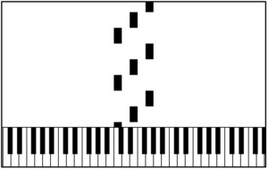Project on making a tool for practicing piano using MIDI files. The goal is to allow a user to practice sections and parts in a focused manner. Some standard practice exercises would also be ideal. Initially inspired by https://chaomoon.com/musicreading/
Binary file visualizer
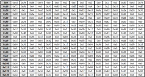I worked on this when I made a MIDI parser. It was very useful to see the content of a MIDI file byte-by-byte. I could have used an existing visualizer, but making my own seemed both trivial and fun. Having my own visualizer also allows to make any kind of extension that I would want.
Bezier Curves
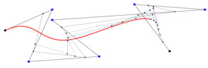Here I wanted to understand how bezier curves worked. The page shows a single curve with 6 control points which are all used to calculate the points of the curve. The curve can be drawn at many intermediate steps using the bottom slider. There is also code for drawing a qubic spline, though the draw call is commented out on line 365.
Noise
This project was about visualizing noise and different generators of noise. The most simple being white noise and a naive blue noise generator. I never got to implementing other noise generators for the page, but have experience implementing some for a Ray Tracer project in F#. The page also uses a custom linear congruential generator since I wanted control over the randomness. A user of the page can write a different random generator or change the parameters to see how it affects the generated points. Though the blue noise generator only updates previously generated points when the seed is changed. And a bad generator may cause the page to freeze since it cannot generate a point for the blue noise generator.
Graph Coloring
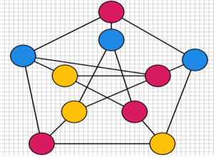This project was for generating graphs for the 3-coloring problem. The goal was for the graphs to be printable and colorable such that e.g. kids could try to solve them. Besides some work on the presentation, the only thing it really needs is random generation, some suggested graphs, and automatically made solutions to verify against.
Animation

This project was an attempt at understanding how to create an animation framework like Manim. It has some simple functionality like drawing a circle, moving it, and fading it, but nothing fancy. The most interesting part is how to parse the instructions into something which can be animated.
Teaching Algorithms
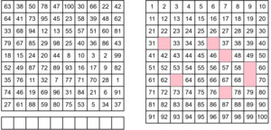Work on creating an online course for teaching algorithms in a semi-choose your own adventure style. The goal is to have interactive lessons, e.g. like brilliant.org, but all free. Figuring out how to structure and teach everything has been the biggest roadblock for progress here.
Procedural Generation
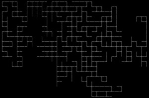Project on procedural generation e.g. using wave collapse technique.
Barycentric coordinates
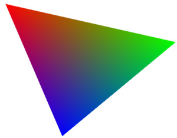Project for learning about the barycentric coordinate system. Really useful to know for 3D graphics.
Collision Detection
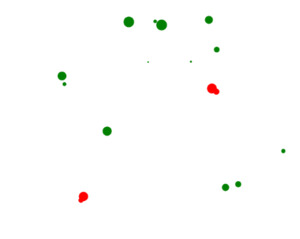A seperate project to focus on just collision detection of elements. So far it only has a naive collision detection algorithm for circles.
Breakout Game
A very simple game for trying to make something which works with a physics engine. The goal is for this to work with tablets and maybe other devices in the future. Right now it is still very much work in progress.
Drawing
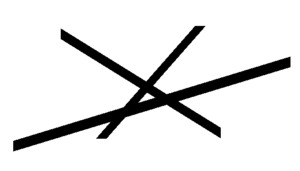This project was an early excursion into graphics programming. I wanted to know how simple drawing algorithms like Bresenham actually works and how to extend it to thicker lines.
Butterfly Networks (FFT Graphs)
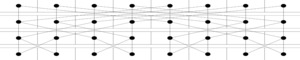Completely abandoned project on visualizing butterfly networks (FFT Graphs).
Rogue-like RTS
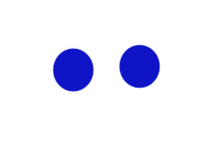Ambitious work on making a rogue-like RTS game. Making pathfinding and collision detection properly work has been the biggest issue for progress here.
Physics
Project on how to do physics simulation of 2D objects. This was mostly based off of the tutorial https://www.chrishecker.com/Rigid_Body_Dynamics
Glyphs
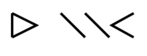A fun little work in progress project on creating an alternative alphabet for hiragana which uses some base shapes for the vowel sounds and combines with other shapes for consonant sound.
Slideshows
The most finished projects here are the slideshows I made for various occasions. These are developed in Javascript, instead of something like Powerpoint, because I wanted to have more control, and a more interactive experience, than what static slides can provide. I believe this also stems from my interest in education and wanting to present and explain a topic in what I believe to be the most easily understandable way.
Ph.D. Defence
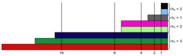This slideshow was made for my Ph.D. defence. It uses as a base some of the slides from the saddlepoint slideshow, but expands on it for the specific slideshows I made.
Bitonic Merge Sort
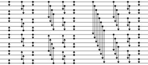This slideshow was for a 45 minute mini-lecture on Bitonic Merge Sort presented for first year students for an algorithms and data structures course. The slides contain some interactive bits which I wanted to make the presentation easier to follow.
5 Minutes pitch on Saddlepoint research
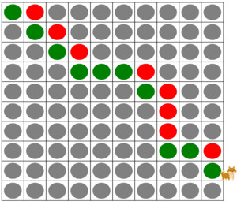This slideshow was for a small 5 minute presentation of my research at the time of a department retreat. It also served as base for my Ph.d. presentation and the slideshow framework was also used for the Bitonic Merge Sort presentation.